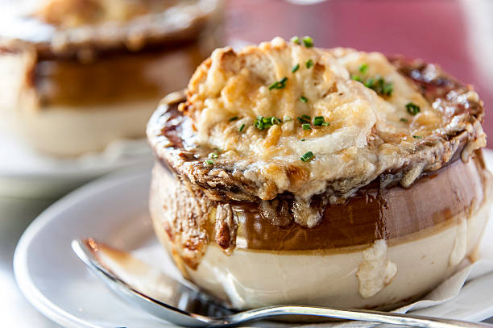

Restaurant-Style French Onion Soup

Description
This French onion soup is similar to what you can get in a restaurant. It is made with wine and sherry to bring out the beef flavor of the broth and topped with two kinds of cheese to give it that bubbly, browned, stretchy topping.
Tips: You can use the slicer attachment of a food processor to slice the onions. You can purchase day-old bread, slice and bake it ahead of time, and keep it in a resealable bag.
Ingredients
- ½ cup butter
- 8 onions, sliced
- 2 cloves garlic, crushed
- 1 teaspoon dried thyme
- ½ teaspoon salt, or to taste
- ½ teaspoon ground black pepper, or to taste
- 1 cup red wine
- 1 tablespoon sherry
- 2 tablespoons all-purpose flour
- 2 quarts beef broth
- 1 French baguette, cut into 1/2-inch thick slices
- 2 tablespoons olive oil, or as needed
- 6 slices Swiss cheese
- 6 slices provolone cheese
Steps
- Melt butter in a large stockpot over medium heat. Cook and stir onions, garlic, thyme, salt, and pepper in hot butter until onions are soft and brown, about 30 minutes.
- Pour in red wine and sherry; bring to a boil. Reduce heat to low and simmer until you can no longer smell alcohol cooking off, about 15 minutes.
- Meanwhile, preheat the oven to 350 degrees F (175 degrees C).
- Sprinkle onion mixture with flour and stir until coated; cook for 10 minutes. Pour in broth, stir to blend in flour, and simmer until slightly thickened, about 20 minutes.
- While soup is simmering, arrange baguette slices on a baking sheet and drizzle with olive oil. Bake baguette slices in the preheated oven until golden brown, 12 to 14 minutes, flipping slices halfway through baking. Set aside.
- Set an oven rack about 8 inches from the heat source and preheat the oven's broiler.
- Ladle soup into 6 oven-proof crocks, filling them about 3/4 full. Place 1 or 2 toasted baguette slices over each soup serving, then top each with a Swiss cheese and provolone slice. Carefully place filled crocks onto a sturdy baking sheet.
- Cook soup under the preheated broiler until cheese is browned and bubbly, 3 to 4 minutes.
Original recipe taken from: allrecipes.